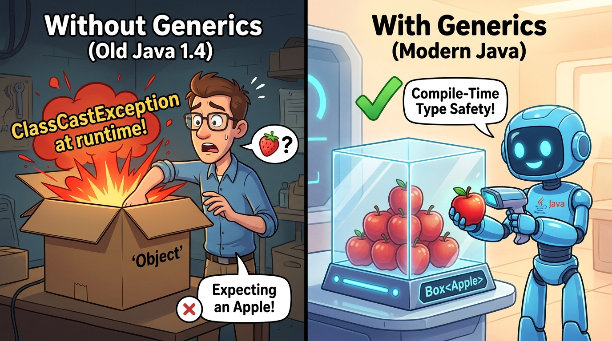
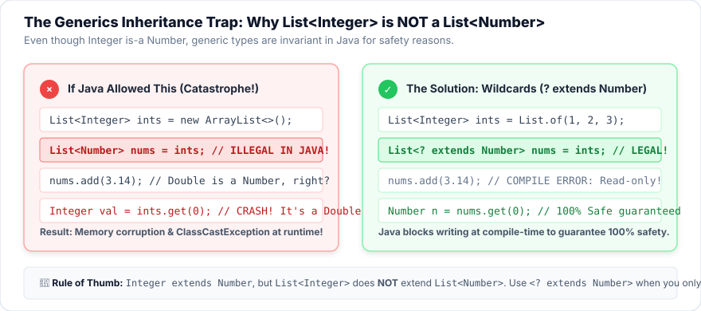
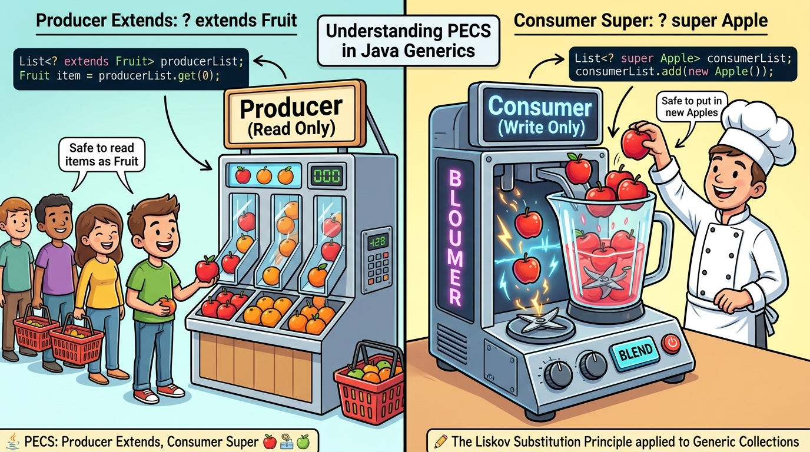
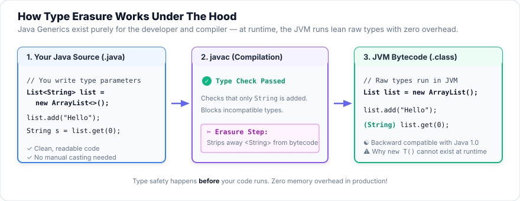

Session 2 — Generics
In Session 1 you wrote List<String> and Map<String, Integer> without asking what the
angle brackets really do. Today you find out. More importantly, you learn to write your own classes
and methods with <T>: code that works for any type, yet is still checked by the compiler.
This is how the whole Collections Framework (and later JavaFX) is built.
- Identify the problem generics solve and list their advantages and limitations.
- Declare a generic class (
Box<T>,Pair<K, V>) and create objects from it. - Define and call generic methods, including bounded ones (
<T extends Comparable<T>>). - Explain the wildcards
?,? extends Xand? super X, and choose the right one (PECS). - Describe how inheritance works with generic types, and why
List<Integer>is not aList<Number>. - Explain type inference (the diamond
<>,var, inferred method types) and debug the most common generics compile errors.
Your Roadmap for Today
code/s02-generics in IntelliJ (File → Open), exactly like Session 1. The examples are in
src/main/java/com/aptech/s02: Box.java, Pair.java and E01_… to E10_….
Run any of them with the green ▶ next to main. Every output on this page is the real output of those files.
Why This Matters
Imagine writing a StringList class, then an IntegerList, then a StudentList, then a ProductList…
thousands of lines that are all the same code with a different type name. Or you write one list that holds Object,
but then nothing stops somebody putting a number into your list of names, and the program crashes later in front of a user.
Generics solve both problems at once: write the code once with a placeholder type T, and let the
compiler check every use of it. When you build JavaFX screens later, every table (TableView<Student>), drop-down
(ComboBox<String>) and chart series (XYChart.Series<String, Number>) is a generic class.
When you move house, you can throw everything into plain unlabelled boxes. Packing is fast, but when you unpack you have to open each box and guess what's inside. Sometimes you reach for plates and grab a hammer. That's Java without generics.
Or you write a label on every box: "KITCHEN: plates only". Now the removal company refuses to put a hammer in that box
while packing, and when you unpack you know exactly what you'll find. The label is the <Plate>.
That's Java with generics.

Objects like mystery cardboard boxes — you reached in expecting an Apple, but pulled out a bug, causing an explosive ClassCastException at runtime! Modern Java generics put a clear label on the box (Box<Apple>), and the compiler acts like a security scanner ensuring only Apples can ever go inside.
Part 1 — Why Do We Need Generics?
Example 1 — life without generics
Generics were added in Java 5 (2004). Before that, every collection held plain Objects. Here is what that was like. (Such a collection with no <> is called a raw type. It still compiles today, only so that very old code keeps working.)
package com.aptech.s02;
import java.util.ArrayList;
import java.util.List;
/**
* Example 1 — Life BEFORE generics (Java 1.4 and older).
* A "raw" list accepts anything, so mistakes are only discovered when the program is already running.
*/
public class E01_WithoutGenerics {
@SuppressWarnings({"rawtypes", "unchecked"}) // hides the compiler's warnings so you can see the crash
public static void main(String[] args) {
List names = new ArrayList(); // raw type: no <String>, so it holds plain Objects
names.add("Ada");
names.add("Ben");
names.add(42); // oops! a number slipped in - the compiler does not stop us
for (int i = 0; i < names.size(); i++) {
try {
String name = (String) names.get(i); // we must CAST every time we read
System.out.println("Hello, " + name.toUpperCase());
} catch (ClassCastException e) {
System.out.println("CRASH at index " + i + ": " + e.getMessage());
}
}
}
}| Line | What it does, in plain English |
|---|---|
| 11 | @SuppressWarnings tells the compiler "don't show me warnings here". We hide them only so the program runs and you can watch it crash. Never do this in real code. The warnings were trying to help! |
| 13 | A raw List: no <String>. It will accept any object at all. |
| 14–15 | Two names go in. Fine. |
| 16 | The number 42 goes in too. The compiler says nothing, because a raw list really is allowed to hold anything. |
| 20 | get(i) returns an Object, so we must cast it: (String) means "trust me, this is a String". For index 2 it isn't, so Java throws a ClassCastException while the program is running. |
| 22–23 | We catch the crash only so the example can print the message. In a real app, the user would see the program fail. |
Example 2 — the same program with generics
package com.aptech.s02;
import java.util.ArrayList;
import java.util.List;
/**
* Example 2 — The same program WITH generics.
* The compiler now checks every add(), and reading needs no cast.
*/
public class E02_WithGenerics {
public static void main(String[] args) {
List<String> names = new ArrayList<>(); // "a list of Strings" - the compiler remembers this
names.add("Ada");
names.add("Ben");
// names.add(42); // COMPILE ERROR: int cannot be converted to String
for (String name : names) { // no cast needed: get() already returns String
System.out.println("Hello, " + name.toUpperCase());
}
}
}| Line | What it does, in plain English |
|---|---|
| 12 | List<String>: "a list of Strings". The compiler now remembers what may go in. |
| 15 | If you remove the //, IntelliJ underlines 42 in red immediately, before you can even run it: incompatible types: int cannot be converted to String. |
| 17 | Reading needs no cast: the compiler already knows every element is a String, so name.toUpperCase() is always safe. |
- Compile time vs run time
- Compile time is when Java checks and translates your code, before it runs (IntelliJ does this constantly as you type). Run time is when the program is actually running.
- Cast
(String) x - Telling Java "treat this object as a String". If it's not really a String, you get a
ClassCastExceptionat run time. - Raw type
- A generic class used without its
<…>, like plainList. Only for old code; never write it yourself. - Generics
- A Java feature that lets classes, interfaces and methods take types as parameters, written in
< >.
💻 Try it: the Box Type-Checker
On the left is a generic Box<T>, which you'll write yourself in Part 2. On the right is an old-style raw box.
Pick a type for T, then try putting different values in. Watch when each mistake is caught. Things to try:
- Choose
Box<String>and put95. Then press String s = (String) rawBox.get(). - Choose
Box<Double>and put95. Surprised? Anintis auto-boxed toInteger, and anIntegeris not aDouble. (95.0would work.) - Choose
Box<Number>: now both95and3.5are accepted. Why? (Both Integer and Double are Numbers.)
- Type safety: wrong types are caught at compile time, not at run time.
- No casts: what you take out already has the right type.
- Reusable code: write a class or method once, and use it for any type.
List<String> over a raw List?Part 2 — Generic Classes: Declaration and Instantiation
A generic class is a class with a type parameter, a placeholder name (usually T) written in
angle brackets after the class name. Inside the class, you use T wherever you would normally write a real type.
When someone creates an object, they choose what T means.
Box<T> is a cookie cutter: one shape, written once. When you press it into
chocolate dough you get a chocolate cookie (Box<String>); into ginger dough, a ginger cookie (Box<Integer>).
Same shape, different filling, and you always know which filling each cookie has.
Declaring a generic class: Box<T>
public classa normal class declaration
Boxthe class name
<T>type parameter: "this class works with some type I'll call T"
{ … }inside, use T like any type: fields, parameters, return types
package com.aptech.s02;
/**
* A generic class: a Box that can hold ONE item of any type T.
* T is a "type parameter" - a placeholder that is filled in when you create a Box.
*/
public class Box<T> {
private T item; // the item's type is whatever T turns out to be
public void put(T item) { // only accepts a T
this.item = item;
}
public T get() { // gives back a T - no cast needed by the caller
return item;
}
public boolean isEmpty() {
return item == null;
}
@Override
public String toString() {
return "Box[" + item + "]";
}
}| Line | What it does, in plain English |
|---|---|
| 7 | public class Box<T> declares the class and its type parameter T. T is not a real class; it is a blank to be filled in later. |
| 9 | A field of type T. For a Box<String> it will hold a String; for a Box<Integer>, an Integer. |
| 11–13 | put(T item) only accepts a T, so the compiler blocks anything else. |
| 15–17 | get() returns a T, so the caller gets the right type back with no cast. |
| 19–21 | An ordinary method. Not everything in a generic class has to mention T. |
| 23–26 | toString() controls how a Box prints: Box[Ada]. |
Instantiating (creating) generic objects
Instantiate means "create an object from a class". For a generic class you also choose the type argument, the real type that replaces T:
package com.aptech.s02;
/**
* Example 3 — Creating (instantiating) objects of our generic Box class.
*/
public class E03_BoxDemo {
public static void main(String[] args) {
Box<String> nameBox = new Box<>(); // T becomes String
nameBox.put("Ada");
String name = nameBox.get(); // returns String - no cast
System.out.println(nameBox + " holds a String of length " + name.length());
Box<Integer> scoreBox = new Box<>(); // T becomes Integer
scoreBox.put(95); // autoboxing: int 95 -> Integer
int score = scoreBox.get(); // unboxing: Integer -> int
System.out.println(scoreBox + " holds a score, plus bonus = " + (score + 5));
Box<Box<String>> giftBox = new Box<>(); // a box inside a box - T is Box<String>
giftBox.put(nameBox);
System.out.println("Gift box: " + giftBox + ", inner item: " + giftBox.get().get());
Box<Double> emptyBox = new Box<>();
System.out.println("Is the Double box empty? " + emptyBox.isEmpty());
// scoreBox.put("ninety"); // COMPILE ERROR: String cannot be converted to Integer
}
}| Line | What it does, in plain English |
|---|---|
| 8 | Create a Box<String>: in this object, every T means String. The <> on the right (the diamond) copies String from the left. |
| 10 | get() returns a String, so we can call .length() straight away. |
| 13–15 | The same class, now with T = Integer. put(95) auto-boxes the int into an Integer; int score = get() unboxes it again. |
| 18–20 | A type argument can itself be generic: a Box of Box<String>. giftBox.get() gives the inner box, and .get() again gives "Ada". |
| 22–23 | A new, empty Box<Double>. |
| 24 | Putting a String into the Integer box would be a compile error: String cannot be converted to Integer. |
T with a real type, and the compiler checks every use.Naming type parameters
You could call a type parameter anything, but Java programmers always use a single capital letter, so it can never be confused with a real class name. These letters are a convention everyone recognises:
| Letter | Stands for | You'll see it in… |
|---|---|---|
T | Type (the general default) | Box<T>, Optional<T> |
E | Element (of a collection) | List<E>, Set<E> |
K, V | Key, Value | Map<K, V> |
N | Number | Stats<N extends Number> |
R | Result / return type | Function<T, R> |
S, U | 2nd, 3rd type | when you need more than one |
Example 4 — two type parameters: Pair<K, V>
A class can have several type parameters, separated by commas. Pair holds two values that may be of different types, for example a name and a score.
package com.aptech.s02;
/**
* A generic class with TWO type parameters: K (key / first) and V (value / second).
*/
public class Pair<K, V> {
private final K first;
private final V second;
public Pair(K first, V second) {
this.first = first;
this.second = second;
}
public K getFirst() { return first; }
public V getSecond() { return second; }
/** Returns a NEW pair with the two parts swapped. Notice the types swap too: Pair<V, K>. */
public Pair<V, K> swap() {
return new Pair<>(second, first);
}
/** A static generic "factory" method - Java works out K and V from the arguments. */
public static <K, V> Pair<K, V> of(K first, V second) {
return new Pair<>(first, second);
}
@Override
public String toString() {
return "(" + first + ", " + second + ")";
}
}| Line | What it does, in plain English |
|---|---|
| 6 | Two type parameters, K and V. |
| 8–9 | The first value has type K, the second has type V. final means they can't change after creation. |
| 11–14 | The constructor takes a K and a V. |
| 16–17 | Getters return the correct types. |
| 20–22 | swap() returns a Pair<V, K>: the types swap along with the values. The compiler tracks this for you. |
| 25–27 | A static generic method (Part 3). The <K, V> before the return type declares its own type parameters, so Pair.of("Ben", true) works out K = String, V = Boolean by itself. |
package com.aptech.s02;
import java.util.ArrayList;
import java.util.List;
/**
* Example 4 — A class with two type parameters, and a List of Pairs.
*/
public class E04_PairDemo {
public static void main(String[] args) {
Pair<String, Integer> ada = new Pair<>("Ada", 95); // K = String, V = Integer
System.out.println(ada.getFirst() + " scored " + ada.getSecond());
Pair<Integer, String> swapped = ada.swap(); // the types are swapped too
System.out.println("Swapped: " + swapped);
Pair<String, Boolean> paid = Pair.of("Ben", true); // factory method, types inferred
System.out.println("Paid? " + paid);
List<Pair<String, Integer>> results = new ArrayList<>(); // generics inside generics
results.add(ada);
results.add(new Pair<>("Chi", 71));
int total = 0;
for (Pair<String, Integer> p : results) {
total += p.getSecond();
}
System.out.println(results + " -> total " + total);
}
}| Line | What it does, in plain English |
|---|---|
| 11 | A pair of a String and an Integer. |
| 14 | The swapped pair has type Pair<Integer, String>. If you wrote Pair<String, Integer> swapped, the compiler would refuse. |
| 17 | Using the factory method of: no new, and no types to write. |
| 20 | Generics combine: a List of Pair<String, Integer>. |
| 24–26 | Loop over the pairs and add up the scores. p.getSecond() is an Integer, so it can be added directly. |
class Name<T> { … }, and use T inside as a type.
Instantiate: Name<RealType> x = new Name<>();. Use several parameters with commas: Pair<K, V>.
Type arguments must be reference types (Integer, not int).
Crate that holds one item of any type:public class Crate { private item; }<T> after the class name declares the type parameter, and the field has type T. (Any capital letter works if you use the same one twice, e.g. <E> and E.)Part 3 — Generic Methods
Sometimes you don't need a whole generic class, just one method that works for any type, such as "print any array" or "swap two elements of any array". A generic method declares its own type parameter, written just before the return type.
public staticnormal modifiers
<T>"this method has its own type T" (always BEFORE the return type)
Treturn type (here: whatever T is)
firstOrNullmethod name
(List<T> list)parameter that uses T
Example 5 — three generic methods
package com.aptech.s02;
import java.util.Arrays;
import java.util.List;
/**
* Example 5 — Generic METHODS: the method has its own type parameter, written before the return type.
*/
public class E05_GenericMethods {
/** Prints any array, whatever the element type. */
public static <T> void printAll(T[] items) {
for (T item : items) {
System.out.print(item + " ");
}
System.out.println();
}
/** Returns the first element, or null if the list is empty. The return type follows T. */
public static <T> T firstOrNull(List<T> list) {
return list.isEmpty() ? null : list.get(0);
}
/** Swaps two positions in any array. */
public static <T> void swap(T[] items, int i, int j) {
T temp = items[i];
items[i] = items[j];
items[j] = temp;
}
public static void main(String[] args) {
String[] names = {"Ada", "Ben", "Chi"};
Integer[] scores = {72, 95, 60};
printAll(names); // T is inferred as String
printAll(scores); // T is inferred as Integer
swap(names, 0, 2);
System.out.println("After swap: " + Arrays.toString(names));
String first = firstOrNull(List.of("x", "y")); // T = String, so it returns a String
Integer none = firstOrNull(List.<Integer>of()); // explicit type witness: List.<Integer>of()
System.out.println("first = " + first + ", from empty list = " + none);
E05_GenericMethods.<Double>printAll(new Double[]{1.5, 2.5}); // you CAN name T yourself
}
}| Line | What it does, in plain English |
|---|---|
| 12 | <T> void printAll(T[] items): "for any type T, accept an array of T". The <T> before void is what makes the method generic. |
| 13–15 | Loop over the array. Each element has type T, and anything can be printed. |
| 20–22 | Here T is also the return type: give it a List<String> and you get a String back. The ? : is a short if/else: "if empty then null, else the first element". |
| 25–29 | The classic swap, now for arrays of any type. temp has type T. |
| 35–36 | We never write <String> ourselves: Java infers (works out) T from the argument type. |
| 42 | List.of() with no elements gives Java nothing to infer from, so we name the type ourselves with a type witness: List.<Integer>of(). |
| 45 | The same trick on our own method: ClassName.<Double>printAll(…). You rarely need this, but now you'll recognise it. |
printAll(new int[]{1, 2}) does not compile, because T can't be int. Use Integer[] (as on line 33) or a List<Integer>.
Collections and Arrays, are just a bunch of generic static methods, e.g. Collections.<T>max(…).
<T> goes before the return type. B never declares T (the error would be "cannot find symbol T"), and D has no return type.Part 4 — Bounded Types: "Any Type, As Long As…"
Inside a plain generic method, T could be anything, so the compiler only lets you do things that work for every
object (like printing it). Try to add two Ts, or call compareTo, and you get cannot find symbol.
A bound promises more: <T extends Number> means "T can be any type, as long as it is a Number", so
now every Number method is allowed.
extends Number) is the licence requirement: it limits who may apply, but in return it
guarantees what they can do.
package com.aptech.s02;
import java.util.List;
/**
* Example 6 — Bounded type parameters: "T can be any type, AS LONG AS it is a ..."
*/
public class E06_BoundedTypes {
/** T must be a Number (Integer, Double, Long...), so we are allowed to call doubleValue(). */
public static <T extends Number> double sum(List<T> numbers) {
double total = 0;
for (T n : numbers) {
total += n.doubleValue(); // allowed ONLY because T extends Number
}
return total;
}
/** T must be comparable with itself, so we are allowed to call compareTo(). */
public static <T extends Comparable<T>> T max(List<T> items) {
T best = items.get(0);
for (T item : items) {
if (item.compareTo(best) > 0) {
best = item;
}
}
return best;
}
/** A generic CLASS can have a bound too. */
static class Stats<N extends Number> {
private final List<N> values;
Stats(List<N> values) { this.values = values; }
double average() {
return sum(values) / values.size();
}
}
public static void main(String[] args) {
System.out.println("sum ints = " + sum(List.of(1, 2, 3)));
System.out.println("sum doubles = " + sum(List.of(1.5, 2.5)));
// sum(List.of("a", "b")); // COMPILE ERROR: String is not a Number
System.out.println("max word = " + max(List.of("pear", "apple", "zebra", "fig")));
System.out.println("max number = " + max(List.of(7, 42, 3)));
Stats<Integer> ages = new Stats<>(List.of(18, 21, 30));
System.out.println("average age = " + ages.average());
// Stats<String> bad; // COMPILE ERROR: String is not within bound Number
}
}| Line | What it does, in plain English |
|---|---|
| 11 | <T extends Number>: T must be Number or a subclass (Integer, Double, Long…). Note that the word is always extends here, even for interfaces. |
| 14 | Because every T is a Number, we may call doubleValue(), a method every Number has. Without the bound this line would not compile. |
| 20 | <T extends Comparable<T>>: T must be able to compare itself with another T. String, Integer and Double all are. |
| 23 | So compareTo is allowed. It returns a positive number when item is "bigger" than best. |
| 31 | A generic class can have a bound too: a Stats<N extends Number> can only be created for number types. |
| 42–43 | The same sum works for a list of Integers and a list of Doubles. |
| 44 | sum(List.of("a", "b")) is rejected at compile time, because String is not a Number. |
| 46–47 | max works for Strings (alphabetical: "zebra" is biggest) and numbers. |
| 51 | Stats<String> is rejected: type argument String is not within bounds of type-variable N. |
<T extends Number & Comparable<T>> means "a Number that is also Comparable".
The class (if any) must come first, then interfaces joined with &.
<T extends X> restricts which types may be used, and in exchange unlocks all of X's methods on T.
Use it whenever your generic code needs to do something with its elements (add, compare, measure).
Part 5 — Wildcards: ?, ? extends, ? super
First, the surprising rule
You know from the Bridge lessons that an Integer is a Number. So surely a list of Integers is a list of Numbers? No!
List<Integer> ints = new ArrayList<>();
List<Number> nums = ints; // COMPILE ERROR: List<Integer> cannot be converted to List<Number>Why would Java forbid this? Imagine it were allowed:
List<Number> nums = ints; // pretend this was OK...
nums.add(3.14); // a Double is a Number, so this looks fine...
Integer i = ints.get(0); // ...but ints now contains a Double! CRASH.
List<Integer> is NOT a List<Number>: If Java allowed you to assign List<Integer> to List<Number>, you could add a Double into it (since Double is a Number), corrupting the integer list and causing a crash when read. Java protects you by making generic types invariant unless you explicitly use wildcards like List<? extends Number>.
So how do you write one method that accepts a List<Integer> and a List<Double>? With a wildcard, the question mark ?, which means "some type, I don't know exactly which".
| Wildcard | Read it as… | Accepts | You may |
|---|---|---|---|
List<?> | "a list of something" | any list | read as Object, call size(); not add |
List<? extends Number> | "a list of some kind of Number" (upper bound) | List<Integer>, List<Double>, List<Number> | read as Number; not add |
List<? super Integer> | "a list that can hold Integers" (lower bound) | List<Integer>, List<Number>, List<Object> | add Integers; read only as Object |
Example 7 — the three wildcards in action
package com.aptech.s02;
import java.util.ArrayList;
import java.util.List;
/**
* Example 7 — Wildcards: ? | ? extends X | ? super X
*/
public class E07_Wildcards {
/** Unbounded wildcard: a list of ANYTHING. We can read items (as Object) but not add. */
static void printList(List<?> list) {
for (Object o : list) {
System.out.print(o + " ");
}
System.out.println("(" + list.size() + " items)");
}
/** Upper bound: a list of Number OR any subtype. Safe to READ as Number (a "producer"). */
static double total(List<? extends Number> list) {
double sum = 0;
for (Number n : list) {
sum += n.doubleValue();
}
// list.add(1); // COMPILE ERROR: might be a List<Double>!
return sum;
}
/** Lower bound: a list of Integer OR any supertype. Safe to ADD Integers (a "consumer"). */
static void addOneToFive(List<? super Integer> list) {
for (int i = 1; i <= 5; i++) {
list.add(i);
}
}
public static void main(String[] args) {
List<Integer> ints = List.of(1, 2, 3);
List<Double> doubles = List.of(0.5, 0.25);
List<String> words = List.of("hi", "there");
printList(ints); // List<?> accepts every kind of list
printList(words);
System.out.println("total(ints) = " + total(ints));
System.out.println("total(doubles) = " + total(doubles));
// total(words); // COMPILE ERROR: String is not a Number
List<Number> numbers = new ArrayList<>();
List<Object> objects = new ArrayList<>();
addOneToFive(numbers); // Number is a supertype of Integer - OK
addOneToFive(objects); // Object is a supertype of Integer - OK
System.out.println("numbers = " + numbers + ", objects = " + objects);
// THE surprising rule: Integer IS-A Number, but List<Integer> is NOT a List<Number>
// List<Number> bad = ints; // COMPILE ERROR: incompatible types
List<? extends Number> ok = ints; // this is how you say "a list of some kind of Number"
System.out.println("first via wildcard = " + ok.get(0));
}
}| Line | What it does, in plain English |
|---|---|
| 12–17 | List<?> accepts any list. We don't know the element type, so each element is treated as an Object, which is enough to print it. |
| 20–24 | List<? extends Number>: whatever the list really is, each element is at least a Number, so reading into a Number variable is safe. |
| 25 | But add(1) is forbidden: the list passed in might be a List<Double>, and an Integer doesn't belong there. |
| 30–33 | List<? super Integer>: the list might be a List<Integer>, List<Number> or List<Object>. All of them can hold an Integer, so adding Integers is safe. |
| 41–42 | printList happily takes a list of Integers and a list of Strings. |
| 44–46 | total takes Integers and Doubles, but not Strings (compile error). |
| 48–52 | addOneToFive can fill a List<Number> and a List<Object>. |
| 55–56 | The surprising rule, and its fix: List<Number> refuses a List<Integer>, but List<? extends Number> accepts it. |
PECS: the one rule to remember
Someone hands you a basket that contains "some kind of fruit" (? extends Fruit). You can safely take
anything out and call it a fruit. But you can't put an apple in: it might be a basket of oranges only!
Someone else hands you a basket that "can hold apples" (? super Apple). It might be an apple basket, a fruit basket
or an anything basket. You can always put an apple in. But when you take something out, you can only say "it's
something" (an Object).

? extends Fruit (safe to read as Fruit, but read-only). If your collection is a Consumer that accepts items to write, use ? super Apple (safe to add Apples, write-only).
💻 Try it: the Wildcard Explorer
Pick a parameter type for process(…). The tables show which lists you may pass in, and what you may read and add inside the method.
Every answer was checked with the real Java compiler, so you can trust it more than your intuition! Try this order:
List<Number> (the surprise), then ? extends Number, then ? super Integer.
List<Integer> is not a List<Number>. Use ? extends X to read Xs from "a list of some kind of X",
and ? super X to add Xs to "a list that can hold X". Use ? when you don't care about the type at all.
printAverage(… scores), which only reads numbers. It must accept a List<Integer> and a List<Double>. Best parameter type?extends. A would reject List<Integer>. C accepts only lists of Number or Object. D accepts only List<Object>, and you couldn't do maths on its elements.Part 6 — Inheritance and Generics
Generic classes and interfaces can be extended and implemented just like normal ones. There are three common patterns:
- The subclass stays generic and passes its
Tup:class LabelledBox<T> extends Box<T>. - The subclass fixes the type:
class IntBox extends Box<Integer>. IntBox itself is not generic. - A class implements a generic interface for one type:
class NameList implements Storage<String>.
package com.aptech.s02;
import java.util.ArrayList;
import java.util.Collection;
import java.util.List;
/**
* Example 8 — Inheritance and generics: extending generic classes and implementing generic interfaces.
*/
public class E08_InheritanceWithGenerics {
/** A generic interface: anything that can store and count items of type T. */
interface Storage<T> {
void store(T item);
int count();
}
/** 1) The subclass stays generic: it passes its own T up to the parent. */
static class LabelledBox<T> extends Box<T> {
private final String label;
LabelledBox(String label) { this.label = label; }
@Override
public String toString() { return label + ": " + super.toString(); }
}
/** 2) The subclass FIXES the type: an IntBox is a Box<Integer>, and is not generic itself. */
static class IntBox extends Box<Integer> {
void doubleIt() { put(get() * 2); }
}
/** 3) A class implementing a generic interface for one specific type. */
static class NameList implements Storage<String> {
private final List<String> names = new ArrayList<>();
@Override public void store(String item) { names.add(item.trim()); }
@Override public int count() { return names.size(); }
}
public static void main(String[] args) {
LabelledBox<String> lunch = new LabelledBox<>("Lunch");
lunch.put("Jollof rice");
Box<String> asParent = lunch; // a LabelledBox<String> IS-A Box<String>
System.out.println(asParent);
IntBox counter = new IntBox();
counter.put(21);
counter.doubleIt();
System.out.println("IntBox holds " + counter.get());
Storage<String> storage = new NameList(); // NameList IS-A Storage<String>
storage.store(" Ada ");
storage.store("Ben");
System.out.println("Stored " + storage.count() + " names");
// Same type argument -> normal inheritance works:
ArrayList<String> arrayList = new ArrayList<>(List.of("a", "b"));
List<String> list = arrayList; // ArrayList<String> IS-A List<String>
Collection<String> coll = list; // List<String> IS-A Collection<String>
System.out.println("Collection size: " + coll.size());
// Different type argument -> NOT related, even though Integer extends Number:
// Box<Number> numberBox = new Box<Integer>(); // COMPILE ERROR: incompatible types
}
}| Line | What it does, in plain English |
|---|---|
| 13–16 | A generic interface Storage<T>: anything that can store a T and count its items. |
| 19 | Pattern 1: LabelledBox<T> declares its own T and hands it to Box<T>. It inherits put/get and adds a label. |
| 25 | super.toString() calls the parent's version (Box[…]) and adds the label in front. |
| 29–31 | Pattern 2: IntBox extends Box<Integer>. Inside, get() returns an Integer, so maths works: get() * 2. |
| 34–39 | Pattern 3: NameList implements Storage<String>. Its store method must take a String, exactly what the interface promised for T = String. |
| 44 | A LabelledBox<String> is a Box<String> (same type argument), so this assignment is fine. |
| 52 | Program to the interface: the variable type is Storage<String>. |
| 58–60 | With the same type argument, normal inheritance works: ArrayList<String> → List<String> → Collection<String>. |
| 64 | With a different type argument it doesn't: Box<Integer> is not a Box<Number> (the Part 5 rule again). |
LabelledBox<T> extends Box<T>) or fix it (IntBox extends Box<Integer>).
Generic types are related only when their type arguments are the same, or when a wildcard is used.
Part 7 — Type Inference: Let the Compiler Work It Out
Type inference means the compiler works out a type you didn't write, from the information around it. It saves you from
repeating long types like Map<String, List<Integer>> twice. Crucially, the result is exactly as type-safe as if you
had typed it yourself: the compiler still knows the full type, and you just didn't have to write it.
package com.aptech.s02;
import java.util.ArrayList;
import java.util.Collections;
import java.util.HashMap;
import java.util.List;
import java.util.Map;
import java.util.function.Function;
/**
* Example 9 — Type inference: the compiler works out the types so you don't have to repeat them.
*/
public class E09_TypeInference {
public static void main(String[] args) {
// 1) The diamond <> (Java 7): the type on the right is copied from the left
Map<String, List<Integer>> marks = new HashMap<>(); // instead of new HashMap<String, List<Integer>>()
marks.put("Ada", new ArrayList<>()); // inferred from put()'s parameter type
marks.get("Ada").add(88);
System.out.println("marks = " + marks);
// 2) Generic METHOD calls: T is worked out from the arguments
Pair<String, Double> price = Pair.of("Bread", 950.0); // K = String, V = Double
System.out.println("price = " + price);
// 3) Target typing: T is worked out from where the result is going
List<String> noNames = Collections.emptyList(); // T = String because of the variable's type
System.out.println("noNames is empty? " + noNames.isEmpty());
// 4) var (Java 10): the VARIABLE's type is inferred from the right-hand side
var scores = new ArrayList<Integer>(); // scores is an ArrayList<Integer>
scores.add(70);
scores.add(85);
var best = Collections.max(scores); // best is an Integer
System.out.println("best = " + best);
// 5) Lambdas: the parameter type s is inferred as String
Function<String, Integer> length = s -> s.length();
System.out.println("length(\"JavaFX\") = " + length.apply("JavaFX"));
}
}| Line | What it does, in plain English |
|---|---|
| 16 | Diamond (Java 7): the empty <> copies <String, List<Integer>> from the left side. |
| 17 | Even inside a method call: put expects a List<Integer>, so new ArrayList<>() becomes an ArrayList<Integer>. |
| 22 | Generic method inference: from the arguments "Bread" and 950.0, the compiler decides K = String, V = Double. |
| 26 | Target typing: emptyList() has no arguments to look at, so the compiler looks at where the result goes (a List<String>) and picks T = String. |
| 30 | var (Java 10): the variable's type is inferred from the right side. scores is an ArrayList<Integer>; if you try scores.add("x") it's still a compile error. |
| 33 | best is inferred as Integer because Collections.max of an ArrayList<Integer> returns an Integer. |
| 37 | Lambdas: in s -> s.length(), the compiler knows s is a String because the target is a Function<String, Integer> (a function from String to Integer). |
| Form | Since | Example | Inferred from |
|---|---|---|---|
Diamond <> | Java 7 | List<String> l = new ArrayList<>(); | the variable / parameter type |
| Generic method call | Java 5 | Pair.of("a", 1) | the arguments |
| Target typing | Java 8 | List<String> e = Collections.emptyList(); | where the result goes |
| Lambda parameters | Java 8 | s -> s.length() | the functional interface |
var | Java 10 | var list = new ArrayList<String>(); | the right-hand side |
var and the diamond
var list = new ArrayList<>(); gives the compiler nothing to infer from, so it becomes an ArrayList<Object>, which is almost never what you want.
With var, always write the type on the right: var list = new ArrayList<String>();.
var, generic method calls, lambdas) without losing any safety.
If the compiler can't work a type out, give it a hint: write the type on the variable, or use a type witness like List.<Integer>of().
Part 8 — Advantages, Limitations, and Type Erasure
How generics really work: type erasure
Here is the secret behind most of the limitations: the <String> information exists only at compile time. After checking
your code, the compiler erases the type arguments: T becomes Object (or its bound, e.g. Number), and it inserts
the casts for you. The running program has no idea whether a list was a List<String> or a List<Integer>.
Java was designed this way in 2004 so that new generic code could run alongside all the old pre-generics code.

<T> in step 1. The compiler checks every method call in step 2. Once verified, the compiler strips the type parameters and outputs lean raw bytecode in step 3 with automatic casts inserted. That is why generics carry zero runtime memory overhead, but also why new T() is forbidden!
Example 10 — seeing erasure and the limits
package com.aptech.s02;
import java.util.ArrayList;
import java.util.List;
/**
* Example 10 — The limits of generics, and why they exist (type erasure).
*/
public class E10_Limitations {
static class Shelf<T> {
private final List<T> items = new ArrayList<>(); // use a List instead of a T[] array
// private T[] slots = new T[10]; // COMPILE ERROR: generic array creation
// private static T favourite; // COMPILE ERROR: static + T not allowed
void add(T item) { items.add(item); }
T make() {
// return new T(); // COMPILE ERROR: Java cannot create a T
return null;
}
}
public static void main(String[] args) {
// 1) Type erasure: at run time the <String> / <Integer> part is gone.
List<String> strings = new ArrayList<>();
List<Integer> numbers = new ArrayList<>();
System.out.println("Same class at run time? " + (strings.getClass() == numbers.getClass()));
System.out.println("Class name: " + strings.getClass().getName());
// 2) So you can check "is it a List?" but NOT "is it a List<String>?"
Object thing = strings;
System.out.println("thing instanceof List<?> : " + (thing instanceof List<?>));
// thing instanceof List<String> // COMPILE ERROR: cannot check at run time
// 3) No primitives as type arguments - use the wrapper class
// List<int> bad; // COMPILE ERROR: unexpected type
List<Integer> ok = List.of(1, 2, 3);
System.out.println("List<Integer> works: " + ok);
Shelf<String> shelf = new Shelf<>();
shelf.add("book");
System.out.println("make() returned " + shelf.make());
}
}| Line | What it does, in plain English |
|---|---|
| 12 | Want an array of T? Use a List<T> instead. That's the standard work-around. |
| 13 | new T[10] is illegal (generic array creation): at run time Java wouldn't know what kind of array to make. |
| 14 | A static field of type T is illegal: static fields are shared by all objects, but a Shelf<String> and a Shelf<Integer> have different Ts. |
| 19 | new T() is illegal: after erasure, Java doesn't know which class to create (and T might not even have a no-argument constructor). |
| 28 | Proof of erasure: a List<String> and a List<Integer> have exactly the same class at run time, plain ArrayList. |
| 33 | So instanceof can ask "is it a List?" (written List<?>)… |
| 34 | …but not "is it a List<String>?". That information is gone at run time. |
| 37–38 | Primitives can't be type arguments; use the wrappers. |
Advantages and limitations at a glance
- Compile-time type safety: wrong types are red underlines, not crashes.
- No casts when reading: cleaner, shorter code.
- Reusability: one
Box<T>instead ofStringBox,IntBox, … - Clearer intent:
Map<String, Student>documents itself. - Generic algorithms: one
max,sortorswapfor every type. - No run-time cost: erasure means the program is as fast as before.
- No primitives:
List<int>→ useList<Integer>. - No
new T()→ pass in an object, or a factory (Session 9). - No
new T[n]→ useList<T>. - No
static Tfields. - No
instanceof List<String>→ checkList<?>. - Can't overload on type argument alone:
m(List<String>)andm(List<Integer>)"have the same erasure". - Can't catch or throw a generic exception class.
T is Object (or its bound).
That's why you can't create a T, a T[], a static T, or test instanceof List<String>.
new ArrayList<String>().getClass() == new ArrayList<Integer>().getClass() evaluate to, and why?java.util.ArrayList at run time. You saw this in Example 10's output: "Same class at run time? true".🛠 Guided Lab: The Lucky Draw Bag
You'll write your own generic class, Bag<T>, a bag you put things into and then draw one out at random, like a raffle.
Then you'll use the same class for names (Bag<String>) and prize amounts (Bag<Integer>).
Pair up: one types, one checks. Swap after step 4.
Bag. Change the first line to public class Bag<T> {. You've just declared a generic class!private final List<T> items = new ArrayList<>(); and private final Random random;. Add a constructor public Bag(long seed) that sets random = new Random(seed);. (A fixed seed makes the draw repeatable, handy for checking your output against ours.)public void add(T item), plus size() and isEmpty(). Notice that add takes a T, not an Object.public T draw(): if the bag is empty return null; otherwise pick random.nextInt(items.size()) and return items.remove(index);. The return type is T, so callers won't need a cast.LuckyDraw with main: create Bag<String> raffle = new Bag<>(7);, add four names, draw a winner into a String variable (no cast!). Then create Bag<Integer> prizes = new Bag<>(7); with three amounts and draw into an int.Check: try
raffle.add(42);. It should be a red underline. Read the message, then delete the line.Bag, add public static <E> void pourInto(Bag<E> from, Bag<E> to) that moves every item from one bag into the other (draw from from until it's empty, adding to to). Use it to move the remaining raffle names into nextWeek.raffle.draw() on the now-empty bag. It must print null, not crash. Compare your whole output with the expected output below.Bag.pourInto(raffle, prizes). Why doesn't it compile? (b) Add a method public List<T> peekAll() that returns a copy of the items. (c) Could pourInto be more flexible with a wildcard? (Hint: PECS, the destination only consumes.)👀 Show the complete lab solution (try on your own first!)
package com.aptech.s02.lab;
import java.util.ArrayList;
import java.util.List;
import java.util.Random;
/**
* GUIDED LAB — a generic "lucky draw" bag.
* Put in things of type T, then draw them out at random (each item can be drawn only once).
*/
public class Bag<T> {
private final List<T> items = new ArrayList<>(); // STEP 2: storage for items of type T
private final Random random;
public Bag(long seed) { // a fixed seed makes the draw repeatable for testing
this.random = new Random(seed);
}
public void add(T item) { // STEP 3: only accepts a T
items.add(item);
}
public int size() {
return items.size();
}
public boolean isEmpty() {
return items.isEmpty();
}
/** STEP 4: removes and returns a random item, or null if the bag is empty. */
public T draw() {
if (items.isEmpty()) {
return null;
}
int index = random.nextInt(items.size()); // 0 .. size-1
return items.remove(index);
}
/** STEP 6: a generic METHOD - moves every item from one bag into another bag of the same type. */
public static <E> void pourInto(Bag<E> from, Bag<E> to) {
while (!from.isEmpty()) {
to.add(from.draw());
}
}
}package com.aptech.s02.lab;
/**
* GUIDED LAB — using the generic Bag<T> with different types.
*/
public class LuckyDraw {
public static void main(String[] args) {
// STEP 5a: a Bag of Strings - the raffle
Bag<String> raffle = new Bag<>(7);
raffle.add("Ada");
raffle.add("Ben");
raffle.add("Chi");
raffle.add("Dayo");
// raffle.add(42); // would not compile: 42 is not a String
String winner = raffle.draw(); // no cast needed
System.out.println("Raffle winner: " + winner + " (" + raffle.size() + " names left)");
// STEP 5b: the SAME class, now a Bag of Integers - prize amounts
Bag<Integer> prizes = new Bag<>(7);
prizes.add(5000);
prizes.add(10000);
prizes.add(20000);
int prize = prizes.draw(); // unboxing Integer -> int
System.out.println(winner + " wins N" + prize);
// STEP 6: the generic method moves everything left into a second bag
Bag<String> nextWeek = new Bag<>(7);
Bag.pourInto(raffle, nextWeek);
System.out.println("Moved to next week's raffle: " + nextWeek.size() + " names, this week's bag empty? " + raffle.isEmpty());
// STEP 7: drawing from an empty bag is safe
System.out.println("Draw from empty bag: " + raffle.draw());
}
}Expected output:
Stretch answers: (a) pourInto(Bag<E>, Bag<E>) needs both bags to have the same E, and String ≠ Integer. (c) pourInto(Bag<? extends E> from, Bag<? super E> to) would also let you pour a Bag<Integer> into a Bag<Number>.
⚠️ Common Mistakes (and the Exact Compiler Message)
Almost all generics mistakes are compile errors: IntelliJ underlines them in red before you run anything. That's a good thing! Every message below was produced by the real javac (JDK 25). Hover over the red line in IntelliJ to see the same text.
List<Integer> to be a List<Number>
List<Integer> ints = List.of(1);
List<Number> nums = ints;Fix: List<? extends Number> nums = ints; (read-only use), or change the method parameter to List<? extends Number>.
? extends list
void m(List<? extends Number> list) { list.add(1); }What "CAP#1" means: it's the compiler's name for "the unknown type behind the ?". It can't prove that an int fits that unknown type (it could be Double!).
Fix: if the method needs to add, use List<? super Integer> (PECS) or the exact type.
T
static <T> T max(T a, T b) { return a.compareTo(b) > 0 ? a : b; }Why: an unbounded T could be any object, and not every object has compareTo. Fix: add a bound: static <T extends Comparable<T>> T max(T a, T b).
new T() and new T[10]
T make() { return new T(); }
T[] slots = new T[10];Why: type erasure (Part 8). Fix: use a List<T> instead of an array; to create objects, pass one in as a parameter.
T
class Shelf<T> { static T favourite; }Why: static belongs to the class (shared by all objects), but each object has its own T. Fix: make the field non-static.
class Stats<N extends Number> { }
Stats<String> bad;Fix: use a type that satisfies the bound (Stats<Integer>, Stats<Double>).
void print(List<String> a) { }
void print(List<Integer> b) { }Why: after erasure both are print(List), so Java can't tell them apart. Fix: give them different names (printNames, printScores) or write one generic method.
List names = new ArrayList(); // forgot the <String>Why it matters: it compiles, so beginners ignore it, but you've switched off all type checking and invited a ClassCastException (Example 1). IntelliJ highlights raw types in yellow. Fix: always write the type arguments: List<String> names = new ArrayList<>();.
📝 Knowledge Check
12 questions on the whole session. Aim for 10/12 before starting Lab Task L2. Every "does it compile?" answer was verified with the real Java compiler.
public class Box<T>, what is T?T is filled in with a real type (the type argument) when you write Box<String>, Box<Integer>, etc.class Box<T> { void put(T t) {} }, which lines compile?95 is an int, boxed to Integer. An Integer fits a Box<Integer> and a Box<Number>, but not a Box<Double> (int cannot be converted to Double). Box<int> is illegal: primitives can't be type arguments.Pair from this session, what is printed?Pair<String, Integer> p = Pair.of("Kemi", 21);
System.out.println(p.swap().getFirst() + 1);swap() returns a Pair<Integer, String>, so getFirst() is the Integer 21, and 21 + 1 is numeric addition: 22. The compiler tracks the swapped types for you.public static <T> T firstOrNull(List<T> list). Without the declaration, T is "cannot find symbol".static <T> T max(T a, T b) { return a.compareTo(b) > 0 ? a : b; } fail to compile?<T extends Comparable<T>>. The bound promises that every T can compare itself.Integer is a subclass of Number, a List<Integer> can be passed to a method whose parameter is List<Number>.List<? extends Number>.List<? super Integer> list, which statements compile inside the method?list.add(5);
Integer x = list.get(0);
Object o = list.get(0);
list.add(2.5);
? super Integer list is a consumer of Integers: adding an Integer is safe; reading gives only Object (it might be a List<Object>); a Double doesn't belong in a list that might be a List<Integer>. Check it in the Wildcard Explorer!? extends T. If you only write into it, it consumes values: use ? super T.IntBox a subclass whose type is fixed to Integer (IntBox itself is not generic)?Box. D uses a primitive.list after var list = new ArrayList<>();?var infers from the right, and the diamond infers from the left, so there is nothing to infer from and Java falls back to Object. Write var list = new ArrayList<String>();.💪 Practice Exercises
Not graded. They are your training for Lab Task L2. Try each yourself, then the hint, then the solution. Solutions are tested programs in code/s02-generics/…/practice/.
Easy P1 — Print any array
Write one generic method printArray(String label, T[] array) that prints the label, the array's length and every element. Call it with a String array, an Integer array, a Double array and a Character array.
💡 Hint
Header: static <T> void printArray(String label, T[] array). Remember: Integer[], not int[].
✅ Solution
package com.aptech.s02.practice;
/** Practice 1 (easy) — ONE generic method that prints ANY array, with its length. */
public class P1_PrintArray {
static <T> void printArray(String label, T[] array) {
System.out.print(label + " (" + array.length + "): ");
for (T element : array) {
System.out.print(element + " ");
}
System.out.println();
}
public static void main(String[] args) {
printArray("Names", new String[]{"Ada", "Ben"});
printArray("Scores", new Integer[]{90, 75, 60});
printArray("Prices", new Double[]{9.99, 4.5});
printArray("Flags", new Character[]{'N', 'G'});
}
}Easy P2 — A generic Trio
Write a generic class Trio<T> that holds three values of the same type, with first(), last(), reversed() (a new Trio in reverse order) and toString(). Use it for a podium of names and for three dice rolls.
💡 Hint
reversed() returns Trio<T>: return new Trio<>(c, b, a);
✅ Solution
package com.aptech.s02.practice;
/** Practice 2 (easy) — a generic class holding THREE values of the same type. */
public class P2_Trio {
static class Trio<T> {
private final T a;
private final T b;
private final T c;
Trio(T a, T b, T c) {
this.a = a;
this.b = b;
this.c = c;
}
T first() { return a; }
T last() { return c; }
/** Returns a new Trio in reverse order. */
Trio<T> reversed() {
return new Trio<>(c, b, a);
}
@Override
public String toString() { return "[" + a + ", " + b + ", " + c + "]"; }
}
public static void main(String[] args) {
Trio<String> podium = new Trio<>("Gold: Ada", "Silver: Ben", "Bronze: Chi");
System.out.println(podium + " -> winner " + podium.first());
System.out.println("Reversed: " + podium.reversed());
Trio<Integer> dice = new Trio<>(6, 2, 4);
int total = dice.first() + dice.last();
System.out.println(dice + " -> first + last = " + total);
}
}Medium P3 — Count greater than
Write countGreaterThan(T[] array, T limit) that returns how many elements are greater than limit. It must work for numbers and words.
💡 Hint
You need compareTo, so T needs a bound: <T extends Comparable<T>>.
✅ Solution
package com.aptech.s02.practice;
/** Practice 3 (medium) — a BOUNDED generic method: count elements greater than a given one. */
public class P3_CountGreater {
static <T extends Comparable<T>> int countGreaterThan(T[] array, T limit) {
int count = 0;
for (T element : array) {
if (element.compareTo(limit) > 0) { // compareTo is allowed because of the bound
count++;
}
}
return count;
}
public static void main(String[] args) {
Integer[] scores = {45, 88, 67, 91, 50};
System.out.println("Scores above 60: " + countGreaterThan(scores, 60));
String[] words = {"apple", "mango", "kiwi", "banana"};
System.out.println("Words after \"kiwi\" in the dictionary: " + countGreaterThan(words, "kiwi"));
}
}Medium P4 — Average of any numbers
Write one method average(…) that accepts a List<Integer>, a List<Double> or a List<Long> and returns the average as a double (0 for an empty list).
💡 Hint
The method only reads, so the list is a producer: List<? extends Number>.
✅ Solution
package com.aptech.s02.practice;
import java.util.List;
/** Practice 4 (medium) — ONE method that averages a List<Integer>, List<Double> or List<Long>. */
public class P4_AverageOfAny {
static double average(List<? extends Number> numbers) {
if (numbers.isEmpty()) {
return 0;
}
double sum = 0;
for (Number n : numbers) {
sum += n.doubleValue();
}
return sum / numbers.size();
}
public static void main(String[] args) {
List<Integer> ages = List.of(18, 22, 35);
List<Double> temps = List.of(30.5, 28.0, 31.5, 29.0);
List<Long> views = List.of(1_000_000L, 3_000_000L);
System.out.println("Average age: " + average(ages));
System.out.println("Average temp: " + average(temps));
System.out.println("Average views: " + average(views));
System.out.println("Empty list: " + average(List.of()));
}
}Challenge P5 — Min and max in one pass
Write minMax(List<T> items) that returns a Pair<T, T> holding the smallest and largest element, looping through the list only once. Throw an IllegalArgumentException for an empty list.
💡 Hint
Header: static <T extends Comparable<T>> Pair<T, T> minMax(List<T> items). Start both min and max at the first element.
✅ Solution
package com.aptech.s02.practice;
import com.aptech.s02.Pair;
import java.util.List;
/** Practice 5 (challenge) — find the smallest AND largest in ONE pass, returned as a Pair. */
public class P5_MinMax {
static <T extends Comparable<T>> Pair<T, T> minMax(List<T> items) {
if (items.isEmpty()) {
throw new IllegalArgumentException("list is empty");
}
T min = items.get(0);
T max = items.get(0);
for (T item : items) {
if (item.compareTo(min) < 0) min = item;
if (item.compareTo(max) > 0) max = item;
}
return new Pair<>(min, max);
}
public static void main(String[] args) {
Pair<Integer, Integer> nums = minMax(List.of(42, 7, 19, 88, 3));
System.out.println("numbers -> min " + nums.getFirst() + ", max " + nums.getSecond());
Pair<String, String> cities = minMax(List.of("Lagos", "Abuja", "Kano", "Port Harcourt"));
System.out.println("cities -> first " + cities.getFirst() + ", last " + cities.getSecond());
}
}Challenge P6 — A PECS copy method
Write copy(dest, src) that copies every element of src into dest. It must be able to copy a List<Integer> into a List<Number>, and a List<Number> into a List<Object>.
💡 Hint
src is a producer, dest is a consumer: static <T> void copy(List<? super T> dest, List<? extends T> src). This is the same signature as the real Collections.copy!
✅ Solution
package com.aptech.s02.practice;
import java.util.ArrayList;
import java.util.List;
/** Practice 6 (challenge) — "Producer extends, Consumer super": a flexible copy method. */
public class P6_CopyPecs {
/** Copies every element from src (a PRODUCER of T) into dest (a CONSUMER of T). */
static <T> void copy(List<? super T> dest, List<? extends T> src) {
for (T item : src) {
dest.add(item);
}
}
public static void main(String[] args) {
List<Integer> ints = List.of(1, 2, 3);
List<Double> doubles = List.of(4.5, 5.5);
List<Number> numbers = new ArrayList<>();
copy(numbers, ints); // T = Integer: Integer list -> Number list
copy(numbers, doubles); // T = Double: Double list -> Number list
System.out.println("numbers = " + numbers);
List<Object> everything = new ArrayList<>();
copy(everything, numbers); // T = Number: Number list -> Object list
copy(everything, List.of("done"));
System.out.println("everything = " + everything);
// copy(ints, numbers); // COMPILE ERROR: can't put any Number into a List<Integer>
}
}🛠 Lab Task L2 — Generic Toolkit Pass / fail
Due: the start of Session 3. Time: about 1–2 hours. Pass = the self-check shows 9/9 and you can explain any method for one minute.
🎯 What you'll build
A small toolbox of generic static methods (GenericToolkit) and one generic class (Shelf<T>). All the method headers, including the generics, are already written, so your job is the body of each method. Reading those headers carefully is half the learning.
📦 Getting started
- Open
code/l2-generic-toolkit-starterin IntelliJ. - Run
SelfCheck: it starts at0 passed, 9 failed. - Complete the
// TODOs one by one inGenericToolkit.javaandShelf.java, runningSelfCheckafter each.
📋 Requirements
| # | Header (given) | It must… | Concept |
|---|---|---|---|
| R1 | <T> void swap(List<T> list, int i, int j) | swap two positions | generic method |
| R2 | <T> T lastOrDefault(List<T> list, T fallback) | last element, or fallback if empty | T as return type |
| R3 | <T extends Comparable<T>> T largest(List<T> list) | largest element, null if empty | bounded type |
| R4 | double total(List<? extends Number> numbers) | sum Integers, Doubles, Longs… | upper-bounded wildcard |
| R5 | <T> void fill(List<? super T> dest, T value, int times) | add value n times (also into a List of a supertype) | lower-bounded wildcard |
| R6 | <T> int countMatches(List<T> list, T target) | count equal elements, null-safe | Objects.equals |
| R7 | class Shelf<T> | put (false when full), takeLast (null when empty), isFull, items() returns a copy | generic class |
| R8 | <K, V> Map<V, K> invert(Map<K, V> map) | swap keys and values, keeping order | two type parameters |
✅ Done looks like this
💡 Hints
R3 — largest with null for empty
Start with T best = null;. In the loop: if (best == null || item.compareTo(best) > 0) best = item;
R7 — Shelf
isFull() is items.size() >= capacity. In put, check isFull() first. takeLast() removes index items.size() - 1. items() returns new ArrayList<>(items).
R8 — invert
Loop over map.entrySet() and result.put(e.getValue(), e.getKey()); into a LinkedHashMap<V, K>.
⭐ Bonus
Add <T> List<T> repeat(T value, int times) and <T extends Comparable<T>> boolean isSorted(List<T> list), and test them in a main method of your own.
📺 Further Study
Every video was checked to make sure it exists and matches the topic. Watch the first two this week; use the others when a specific part (wildcards, erasure) needs a second explanation.
Read (official & trusted)
- dev.java — Generics (official Java learning site)
- Oracle Java Tutorials — Generics trail
- Oracle — Guidelines for Wildcard Use (the official PECS advice)
- Oracle — Type Erasure and Restrictions on Generics
- Jakob Jenkov — Java Generics tutorial
- Book: Cay S. Horstmann, Core Java, Volume I, chapter "Generic Programming" (module library reference).
📋 Cheat Sheet
Generic class
public class Box<T> {
private T item;
public void put(T item) { this.item = item; }
public T get() { return item; }
}
Box<String> b = new Box<>(); // instantiate
class Pair<K, V> { ... } // two parametersGeneric method
public static <T> T firstOrNull(List<T> list) { ... }
firstOrNull(names); // T inferred
Util.<String>firstOrNull(names); // explicit witnessBounds
<T extends Number> // T is a Number
<T extends Comparable<T>> // T can compareTo
<T extends Number & Comparable<T>> // bothWildcards (PECS)
List<?> // any list: read as Object
List<? extends Number> // READ Numbers (producer)
List<? super Integer> // ADD Integers (consumer)
<T> void copy(List<? super T> dst, List<? extends T> src)Inheritance
class LabelledBox<T> extends Box<T> {} // stays generic
class IntBox extends Box<Integer> {} // fixes T
class Names implements Storage<String> {} // generic interface
// List<Integer> is NOT a List<Number>Inference
Map<String, List<Integer>> m = new HashMap<>(); // diamond
var list = new ArrayList<String>(); // var
Pair<String, Integer> p = Pair.of("a", 1); // methodNot allowed (erasure)
List<int> new T() new T[10]
static T field x instanceof List<String>
m(List<String>) + m(List<Integer>) // same erasure🎓 Session Summary
- Why: generics give compile-time type safety, no casts and reusable code.
- Generic class:
class Box<T>; instantiate withnew Box<>(); several parameters with<K, V>. - Generic method:
<T>goes before the return type; T is usually inferred. - Bounds:
<T extends X>restricts T and unlocks X's methods. - Wildcards:
?,? extends X(read),? super X(add). PECS. - Inheritance:
List<Integer>is not aList<Number>; subclasses may keep or fix T. - Inference: diamond,
var, method calls, lambdas: less typing, same safety. - Erasure: types vanish at run time, hence no
new T(),new T[],static Torinstanceof List<String>.
- Generics
- Classes, interfaces and methods that take types as parameters.
- Type parameter / type argument
- The placeholder (
TinBox<T>) / the real type that fills it (StringinBox<String>). - Generic class, generic interface, generic method
- A class / interface / method that declares its own type parameter(s).
- Instantiate
- Create an object from a class:
new Box<>(). - Raw type
- A generic type used without
<…>, likeList. Unsafe; only for old code. - Bounded type
<T extends X>: T must be X or a subtype of X.- Wildcard
? - "Some unknown type." Upper-bounded
? extends X, lower-bounded? super X, unbounded?. - PECS
- Producer Extends, Consumer Super: the rule for choosing a wildcard.
- Type inference
- The compiler working out a type you didn't write.
- Type witness
- Naming the type yourself on a generic method call:
List.<Integer>of(). - Type erasure
- The compiler removes type arguments after checking them; at run time T is Object (or its bound).
- Compile time / run time
- When code is checked and translated / when it actually runs.